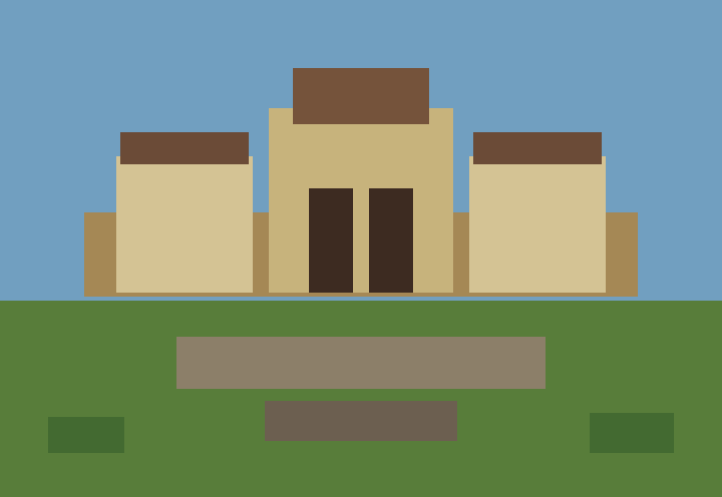
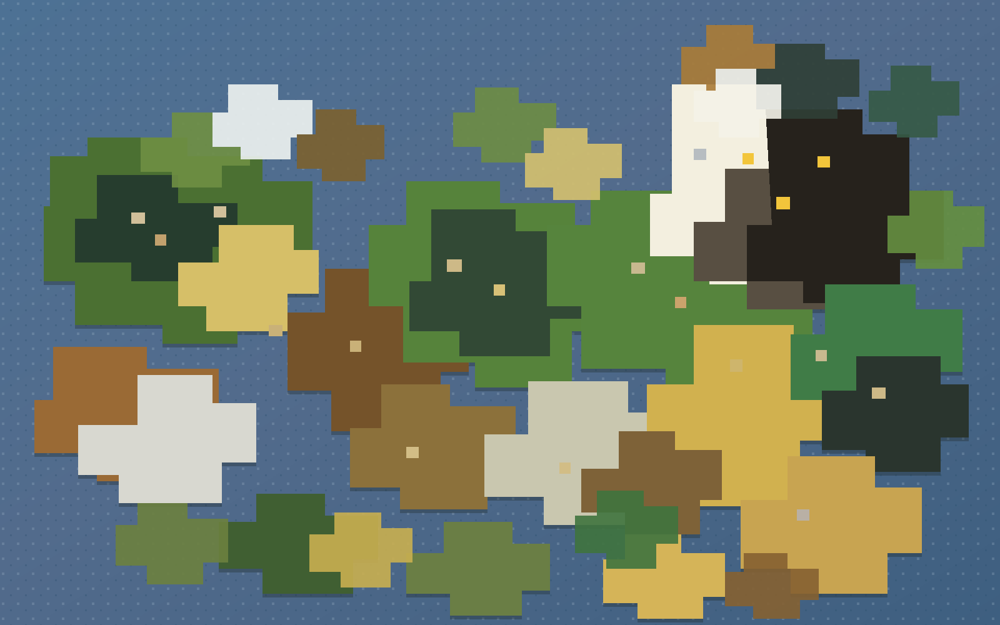
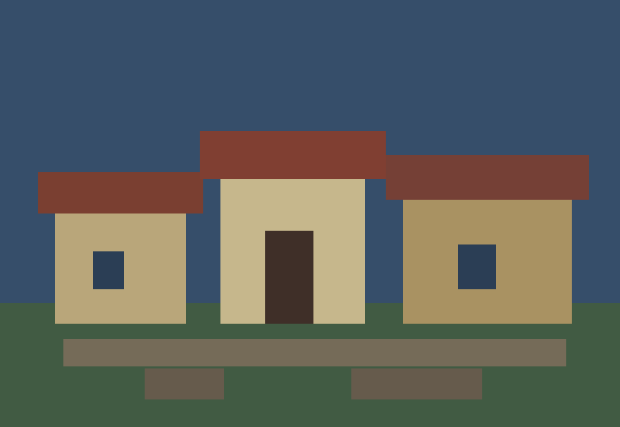
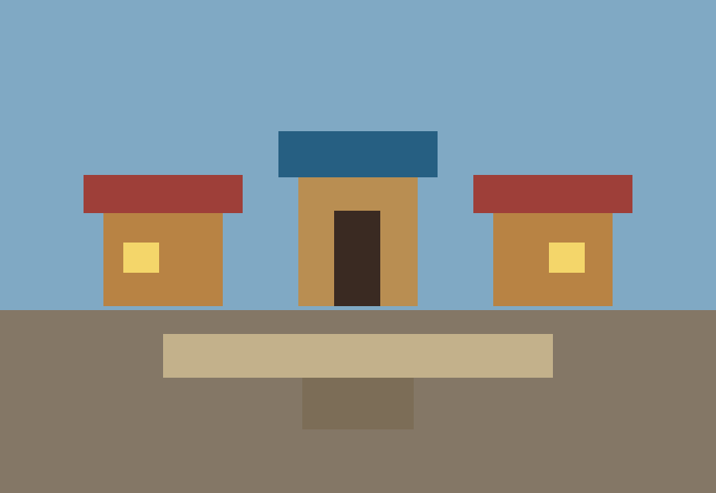
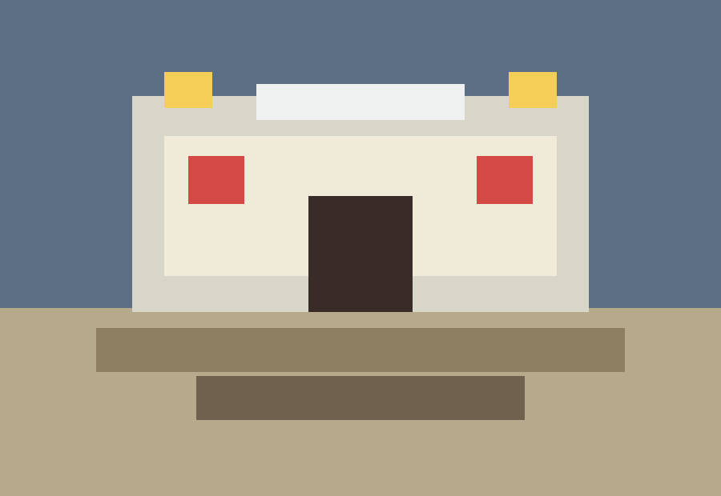

Lumbridge courtyard scale test

Welcome to Project RuneCraft
Marc and David are rebuilding the world of Gielinor in Minecraft, one familiar path, roofline, and ridiculous childhood memory at a time.
Who we are
We grew up on RuneScape 2 and Minecraft. Project RuneCraft is what happens when those two obsessions finally get a shared save file.
Our goal is to make Gielinor feel recognisable from the first glance, while still embracing the constraints and charm of Minecraft scale, blocks, materials, lighting, and survival-friendly building.
We translate routes, towns, banks, castles, docks, fields, and strange little corners into block builds with readable silhouettes.
Every milestone gets logged with notes, screenshots, build time, and progress updates from the latest pass.
Fans can send ideas, corrections, references, and favourite places they want to see on the build list.
Lumber Yard
A live storyboard for our build. Track our progress for each project we undertake!
World Map
A high-level progress map for the places we want to connect first, from starter towns to the big hubs.
Grand Exchange
A hub for progress posts, image drops, blog notes, and tiny donation goals.

Lumbridge courtyard scale test

Varrock roof palette experiments

Grand Exchange stall layouts
Short field notes can live here: build mistakes, texture tests, new regions, world downloads, and votes for what comes next.

Falador Party Room
Tell us which quest spot, bank chest, alleyway, dungeon entrance, or weird little nostalgia corner needs to make the cut.